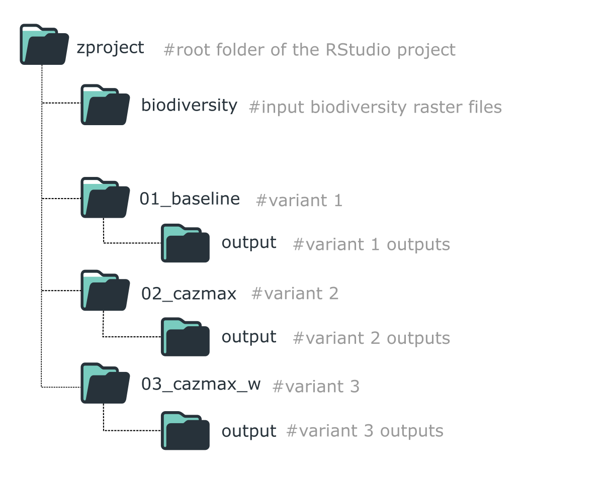

Working with variants in ZonationR
Source:vignettes/articles/variants-workflow.Rmd
variants-workflow.RmdThis vignette demonstrates how to explore multiple prioritization scenarios using ZonationR. Users will:
- Run a baseline prioritization.
- Modify the marginal loss rule.
- Apply feature weights.
- Restrict the analysis to a geographic mask.
- Include cost considerations.

Folder structure for organizing a ZonationR workflow with multiple variants.
This staged workflow keeps each variant isolated,
reproducible, and easy to compare. In R, we use
withr::with_dir() to temporarily change the working
directory for each variant, keeping the project organized while running
multiple scenarios.
Setup
# Install 'withr' package if not already installed
if (!requireNamespace("withr", quietly = TRUE)) {
install.packages("withr")
}
# Load necessary libraries
library(ZonationR)
library(Zonation5RData)
library(withr)Prepare input data
In this tutorial, we use the Zonation5RData package, which provides GeoTIFF layers for workflows with Zonation and ZonationR. To use the layers in the RStudio project, we first create folders and then copy the raster files from the package.
# Create folders to store the input data
dir.create("biodiversity", showWarnings = FALSE)
dir.create("other_layers", showWarnings = FALSE)
# Get the paths to biodiversity rasters included in the package
files_biod <- zonation5rdata_list("biodiversity", full.names = TRUE)
# Copy the biodiversity rasters to the local biodiversity folder
file.copy(files_biod, "biodiversity", overwrite = TRUE)
# Get the paths to the additional layers included in the package
files_other <- zonation5rdata_list("other_layers", full.names = TRUE)
# Copy these rasters to the local other_layers folder
file.copy(files_other, "other_layers", overwrite = TRUE)Variant 1
We begin with a baseline prioritization using default settings.
# Run baseline variant in folder 01_baseline
dir.create("01_baseline", showWarnings = FALSE)
withr::with_dir("01_baseline", {
feature_list(spp_file_dir = "../biodiversity")
settings_file(feature_list_file = "feature_list.txt")
command_file(zonation_path = "C:/Program Files (x86)/Zonation5")
run_command_file(".")
})Variant 2
In this variant, we change the marginal loss rule to Core-Area Zonation (CAZMAX). CAZMAX aims to always cover high-occurrence locations for all features, even if this comes at the cost of lower average coverage.
# Create the folder
dir.create("02_cazmax", showWarnings = FALSE)
withr::with_dir("02_cazmax", {
feature_list(spp_file_dir = "../biodiversity")
settings_file(feature_list_file = "feature_list.txt")
command_file(zonation_path = "C:/Program Files (x86)/Zonation5",
marginal_loss_mode = "CAZMAX" # We edit the marginal loss rule here
)
run_command_file(".")
})Variant 3
We can assign unique weights to features (e.g., species) to increase
the priority of areas where those features occur. This allows
emphasizing key species or biodiversity features in the prioritization.
For this purpose, we use the weight argument in the
feature_list() function. To ensure that these weights are
applied during analysis, the w flag must also be included
in the command_file() call.
For a complete reference of all available analysis flags and their requirements in ZonationR, please see the vignette Analysis flags in ZonationR.
# Create the folder
dir.create("03_cazmax_w", showWarnings = FALSE)
# List files from the folder
spp_files <- list.files("biodiversity", pattern = "\\.tif$", full.names = TRUE)
# Create a weight vector: default weight = 1 for all species
weights <- rep(1, length(spp_files))
# Set higher weights for selected key species
# For example, species 3, 7, and 10 are more important
weights[c(3, 7, 10)] <- 5.0
# Run the prioritization
withr::with_dir("03_cazmax_w", {
feature_list(spp_file_dir = "../biodiversity",
weight = weights) # setting weights
settings_file(feature_list_file = "feature_list.txt")
command_file(zonation_path = "C:/Program Files (x86)/Zonation5",
marginal_loss_mode = "CAZMAX",
flags = "w" # Flag w (use weights)
)
run_command_file(".")
})Variant 4
In this variant, we restrict the prioritization to a subset of European countries. Only areas within the area mask are considered for the ranking process. This approach is useful for focused conservation planning in a defined geographic region.
dir.create("04_cazmax_wa", showWarnings = FALSE)
withr::with_dir("04_cazmax_wa", {
feature_list(spp_file_dir = "../biodiversity",
weight = weights)
settings_file(feature_list_file = "feature_list.txt",
analysis_area_mask_layer = "../other_layers/area_mask.tif")
command_file(zonation_path = "C:/Program Files (x86)/Zonation5",
marginal_loss_mode = "CAZMAX",
flags = "wa" # Flag a for analysis area mask
)
run_command_file(".")
})Variant 5
In this variant, we include a cost layer using the Global Human Modification (GHM) dataset. Cells with higher human impact are penalized, reducing their priority in the ranking.
dir.create("05_cazmax_waX", showWarnings = FALSE)
withr::with_dir("05_cazmax_waX", {
feature_list(spp_file_dir = "../biodiversity",
weight = weights)
settings_file(feature_list_file = "feature_list.txt",
analysis_area_mask_layer = "../other_layers/area_mask.tif",
cost_layer = "../other_layers/gHM_Europe.tif") # We add the cost layer here
command_file(zonation_path = "C:/Program Files (x86)/Zonation5",
marginal_loss_mode = "CAZMAX",
flags = "waX" # using X to activate the cost analysis
)
run_command_file(".")
})Key takeaways
This workflow demonstrated how to construct a variant-based prioritization analysis using ZonationR, with each variant introducing new components to the prioritization setup:
| Variant | Description |
|---|---|
| 01 | Baseline prioritization using default settings |
| 02 | Prioritization with CAZMAX marginal loss rule |
| 03 | CAZMAX rule plus feature/species weighting applied |
| 04 | CAZMAX with weighting and restricted to a geographic mask |
| 05 | CAZMAX with weighting, geographic mask, and cost layer (GHM) |
Developing analyses in incremental variants improves
transparency, reproducibility, and scenario comparison
in spatial conservation planning. To explore the outputs generated by
these analyses (e.g., rank maps, performance curves), see the Zonation outputs vignette, which
provides guidance on interpreting and visualizing Zonation
results.